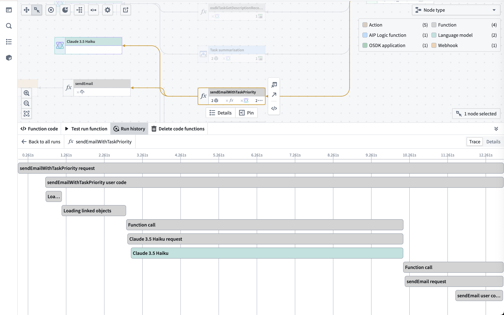

Ontology and AIP observability
Ontology and AIP observability features provide visibility into your AIP and Ontology workflow executions through metrics, tracing, logs, and execution history. As part of a comprehensive observability strategy across the platform, these features are integrated into Workflow Lineage to enable cross-functional teams to monitor and optimize performance at every level of the applications, workflows, and products built with AIP and the Ontology.

Key capabilities of Ontology and AIP observability
- Metrics: Monitor near real-time success/failure counts and P95 execution duration for functions, actions, and AIP Logic.
- Execution history: Track functions, actions, automations, and AIP Logic executions over the past 30 days.
- Distributed tracing: Visualize the complete execution flow across functions, actions, language models, automations, and ontology loads.
- Logging and debugging: Access service logs, custom function log messages, token usage, prompts, error details, and more.
- Log search: Search across all service logs for a source executor to find specific log messages, errors, or patterns across multiple executions.
- Performance monitoring: Identify bottlenecks and optimize execution times.
- Observability dashboards: Build operational dashboards in Workshop by plotting metrics for functions, actions, and compute modules over time with the Observability Chart widget.
- Log export to Foundry streaming dataset: Have your logs exported to a streaming dataset and perform complex analysis on your telemetry.
Getting started with Ontology and AIP observability
To use Ontology and AIP observability:
- Navigate to a function, action, or automation in Workflow Lineage.
- Select the Run history tab to view recent executions.
- Choose View log details on any execution to access traces and logs.
- Ensure proper log permissions are configured for your resources.
Observability across the platform
Ontology and AIP observability integrates with the rest of the Palantir platform to provide insight into all of your Ontology and AIP workflows, even if AIP is not enabled on your enrollment. The following tools work together to provide comprehensive visibility into your systems, from individual function execution to platform-wide resource consumption.
Monitoring performance and optimization
Monitoring resource usage and costs
Monitoring model performance
- AIP Evals: Evaluate and monitor LLM performance systematically.